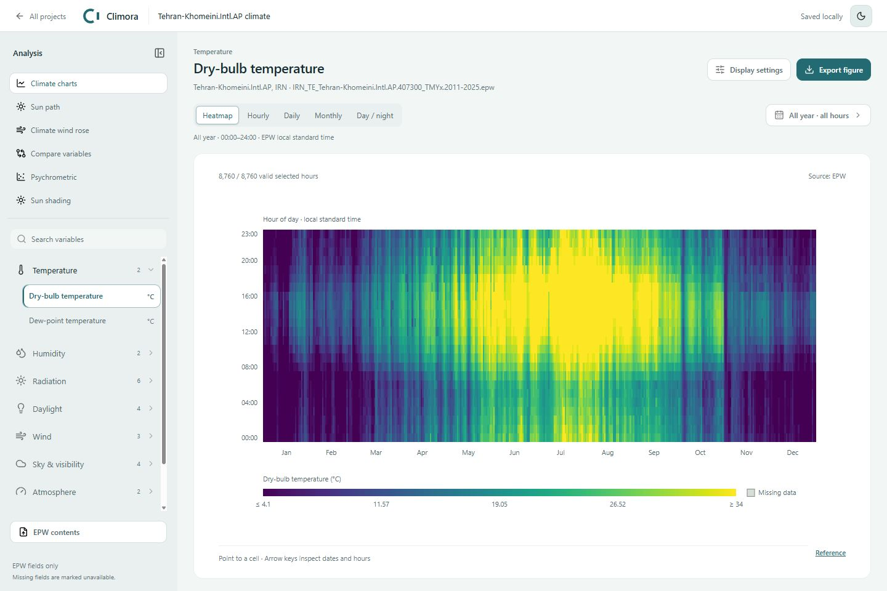
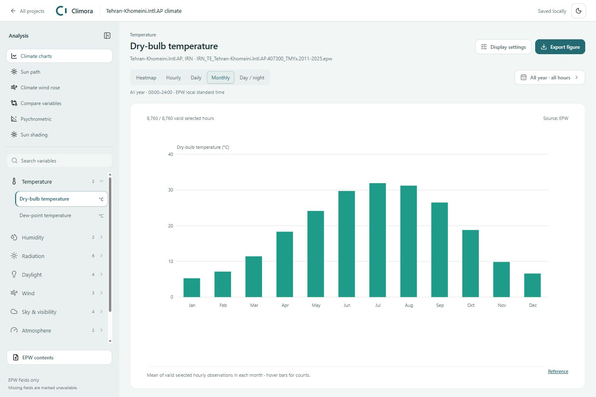
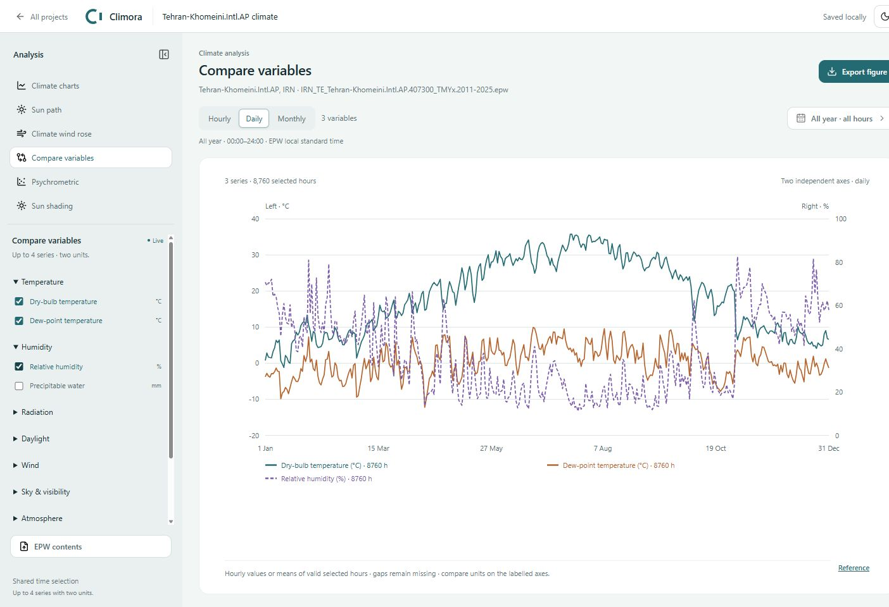
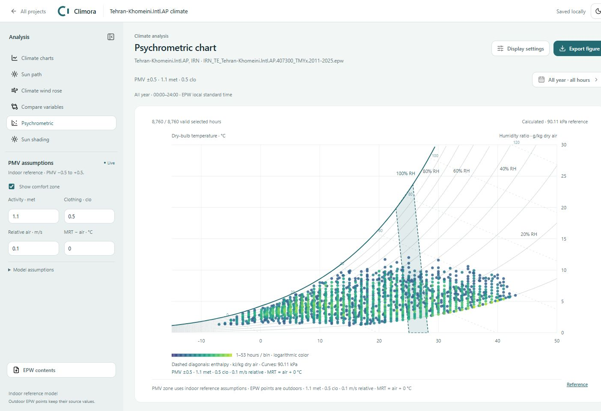
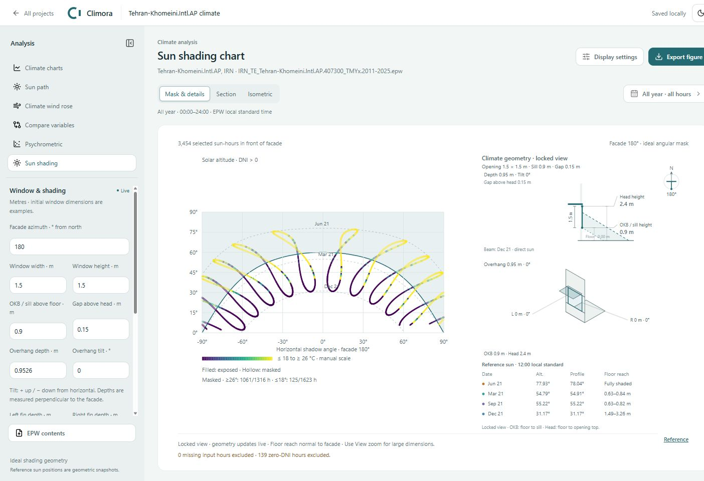
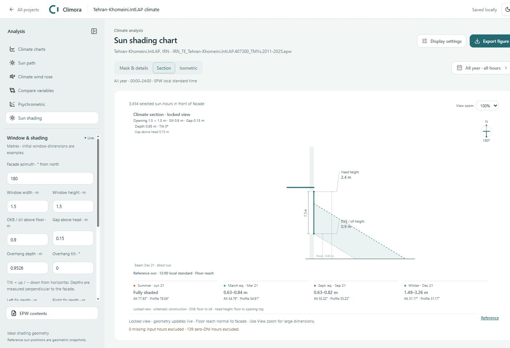
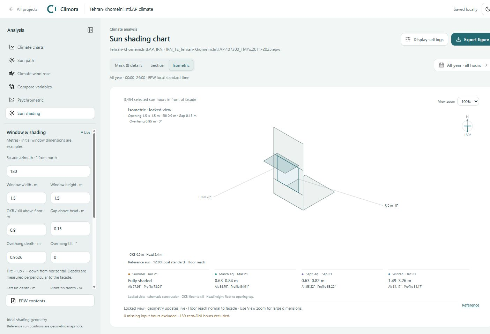
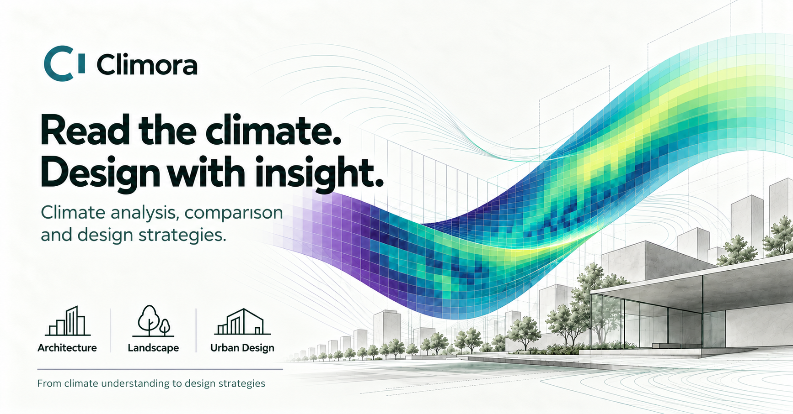

Local Windows projects
A .cli study retains imported weather and supported analysis settings. Valid changes save automatically; Save As selects another location. Reopen from the home screen or recent-project list.
NexoNest / Climate-responsive design
Read the climate. Design with insight. Climora is being developed to connect climate analysis and comparison with design strategies for architecture, landscape and urban design.
How can reading a climate inform decisions across buildings, landscapes and urban spaces?
Make weather patterns legible, compare relevant variables and examine solar exposure with explicit assumptions. The current workbench provides the analytical foundation; broader climate-responsive design strategies define the development direction.
Explore annual heatmaps, hourly and daily series, monthly means, day/night comparisons and a 16-sector wind rose. The variable library groups temperature, humidity, radiation, daylight, wind and other available EPW fields.
Compare up to four numeric variables with at most two different units. Shared time filters and labelled scales keep comparisons explicit. Missing observations remain missing rather than becoming zero.
Choose New project and import a local EPW file, or select a weather station from the map. Station downloads require an internet connection.
In the Windows app, choose a location for the .cli project. Cancel leaves the previous session intact. Use Open project to reopen a saved study.
Select a climate variable, Compare variables, Psychrometric or Sun shading. Use the contextual left panel to adjust relevant inputs.
Select a time period, review coverage and display settings, then export SVG or PNG. Valid study changes save in order; a failed save is shown with a retry action.
| Control | Behavior |
|---|---|
| Palette | Choose a supported color palette in Display settings. Color maps values; it does not establish comfort, safety or design performance. |
| Automatic bounds | Heatmap defaults use the 10th and 90th percentiles of valid selected observations. End colors can clip the visual range without removing the original values. |
| Manual bounds | Set an explicit lower and upper value in the variable's units. Use the same numerical bounds and palette when comparing the same variable across exported figures. |
| Time period | Select calendar dates and hours, with day/night and warm/cold-period options. The active period applies to the supported analyses and exports. |
| Missing observations | Missing or invalid observations are excluded and counted. Coverage, units and source information remain part of the interpretation. |
A .cli study retains imported weather and supported analysis settings. Valid changes save automatically; Save As selects another location. Reopen from the home screen or recent-project list.
Export editable vector figures or raster images, with source, units, period and method metadata. Use Ctrl+Shift+C to copy the current chart.
Recent projects can be pinned. In Windows, Delete asks for confirmation and moves owned project files to the Recycle Bin; original source EPW files are preserved.
The browser preview stores its studies separately. It does not provide native Windows Save As, folder reveal or Recycle Bin behavior.
EPW fields are used as supplied. Climate charts screen invalid values and preserve gaps. Station proximity does not establish representativeness: consider elevation, exposure, the source period and local conditions.
The psychrometric diagram uses temperature, humidity and EPW pressure. Its optional PMV reference region has explicit activity, clothing, relative-air-speed and radiant-temperature assumptions. An indoor reference over outdoor weather is not an outdoor comfort assessment or a compliance certificate.
Sun shading uses solar directions, facade orientation and window/overhang/fin dimensions. Its section and isometric views use a locked camera while dimension and angle edits update the geometry. Neighboring obstructions, diffuse shading, room clipping and energy loads are not calculated.
| Action | Control |
|---|---|
| Copy current chart | Ctrl+Shift+C in the chart workspace. |
| Inspect heatmap | Focus the heatmap, then use the arrow keys to inspect cells. |
| Leave station map | Escape returns from the map to the start screen. |
| Edit analysis inputs | Use the contextual left panel. Valid edits update the chart; incomplete numeric input keeps the last valid chart with an inline message. |
Use the visible controls for project actions and exports. Text fields retain their standard editing controls.
Designed and developed by Hossein Nazari / NexoNest. The current analytical tools and the broader design-strategy direction are described separately. This page does not imply public installer availability or validated performance results.
Read hourly records through heatmaps, time series, daily summaries and monthly views. Soil-temperature headers remain monthly values rather than invented hourly data.
Put up to four compatible numeric variables in one hourly, daily or monthly view. At most two units use explicitly labelled axes.
Read humidity-ratio distributions and an optional indoor PMV reference region with editable assumptions.
Inspect the relationship between solar direction, a facade opening, an overhang and side fins through section, isometric and shading-mask views.







Climate patterns and solar geometry provide a starting point for questions about orientation, openings and shading.
Seasonal and daily patterns frame questions about exposure, outdoor-space use and the timing of activities.
Climate evidence can inform questions about spatial structure and networks of open spaces. Site-specific microclimate analysis requires additional models and data.
Climora's scope extends beyond displaying weather charts. Its development direction is to connect analysis and comparison with climate-responsive strategies across architecture, landscape and urban design.
The implemented foundation includes climate charts, variable comparison, psychrometrics, solar shading and local study output. Broader climate-responsive strategy recommendations remain a development direction.
